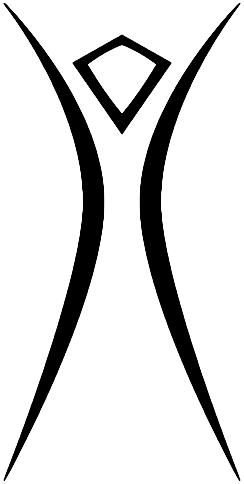

Witch's Tit
February 13-16 '25 - Witch Upon a Star
Tip Jar
This whole operation takes a chuck of change to get off the ground, and we're trying to keep ticket price reasonable to make that aspect of the event as accessible as possible. We'd be incredibly grateful to anyone willing to throw a few bucks our way! The best way to do that is through our Venmo @witchstit. Another option is to add a donation to your ticket purchase (you can select "Donation Only" to donate without purchasing a ticket). 🙏